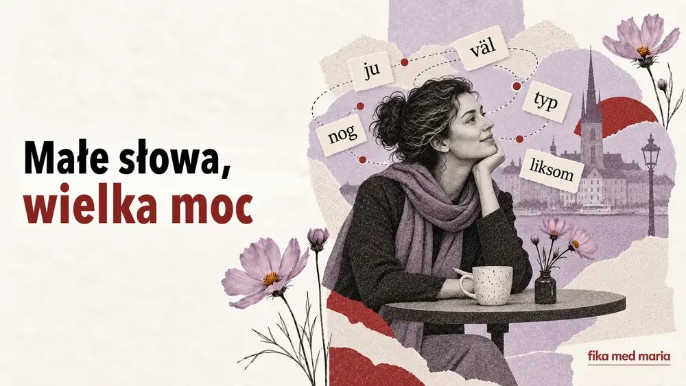

Małe słowa, wielka moc: ju, väl, nog, typ i liksom

Można znać wszystkie słowa w zdaniu i mimo to nie rozumieć, dlaczego zabrzmiało jak wyrzut. Przyczyna często kryje się w partykule, którą słownik tłumaczy niejasno albo radzi w ogóle nie tłumaczyć.
Ju, väl, nog, typ i liksom są małe, ale regulują relacje między rozmówcami. Pokazują, co uważamy za oczywiste, w co wątpimy, jakiej odpowiedzi oczekujemy i jak dosłownie należy traktować to, co zostało powiedziane.
Ju: „przecież to wiesz”
Ju sygnalizuje, że informacja jest rozmówcy znana albo powinna być dla niego zrozumiała.
Det är ju fredag.
No przecież dziś piątek.
Du vet ju hur han är.
Przecież wiesz, jaki on jest.
Jag har ju redan sagt det.
Przecież już to mówiłam.
W zależności od intonacji ju może budować poczucie bliskości – „oboje to wiemy” – albo brzmieć jak wyraz irytacji: „to powinno być oczywiste”.
Väl: spodziewam się, że się zgodzisz
Väl często zamienia twierdzenie w łagodne pytanie albo prośbę o potwierdzenie.
Du kommer väl i morgon?
Przyjdziesz jutro, prawda?
Det är väl inte så farligt?
To przecież nie jest takie straszne, prawda?
Du har väl inte glömt mötet?
Chyba nie zapomniałaś o spotkaniu?
Czasem w zdaniu z väl ukryta jest już pożądana odpowiedź. Rozmówca nie pyta po prostu, czy przyjdziesz. Daje do zrozumienia, że oczekuje twojej obecności.
Nog: prawdopodobnie, ale nie gwarantuję
Nog może wyrażać przypuszczenie albo ostrożną pewność.
Hon kommer nog senare.
Ona pewnie przyjdzie później.
Det går nog bra.
Myślę, że wszystko będzie dobrze.
Jag hinner nog.
Sądzę, że zdążę.
Ciekawe, że ukraińskie „мабуть” (chyba, pewnie) czasem brzmi niepewnie, a szwedzkie nog przy odpowiedniej intonacji może niemal uspokajać: wszystko powinno się dobrze ułożyć.
Typ: mniej więcej, jakby, coś w rodzaju
Słowo typ dawno wyszło poza znaczenie „rodzaj” lub „kategoria”. W mowie potocznej często oznacza przybliżenie.
Det var typ hundra personer där.
Było tam mniej więcej sto osób.
Han är typ chef.
Jest jakby szefem / kimś w rodzaju szefa.
Jag blev typ chockad.
Byłam, jakby, w szoku.
Może ono zarówno zaznaczać przybliżenie, jak i po prostu pełnić rolę słowa-wypełniacza.
Liksom: „jakoś”, „niby”, „wiesz”
Znaczenie liksom szczególnie mocno zależy od kontekstu.
Det kändes liksom fel.
To wydawało się jakoś nie w porządku.
Han bara stod där, liksom.
Po prostu tam stał, no wiesz.
Jag vet liksom inte vad jag ska säga.
Nawet nie wiem, co powiedzieć.
Często liksom pokazuje, że mówiącemu trudno dokładnie nazwać to, co czuje, albo że zaprasza on rozmówcę, by sam dopowiedział, o co chodzi.
Jedno zdanie – pięć różnych nastrojów
Weźmy neutralne zdanie:
Han kommer i morgon. – On przyjdzie jutro.
Teraz zmieńmy tylko jedno słowo:
- Han kommer ju i morgon. – On przecież przyjdzie jutro; wiemy o tym.
- Han kommer väl i morgon? – On przecież przyjdzie jutro, prawda?
- Han kommer nog i morgon. – On pewnie przyjdzie jutro.
- Han kommer typ i morgon. – On przyjdzie mniej więcej jutro / jakoś tak.
- Han kommer liksom i morgon… – On niby przyjdzie jutro… ale jest tu pewne „ale”.
Gramatyka prawie się nie zmieniła. Stosunek mówiącego do informacji – całkowicie.
Jak się ich uczyć
Nie zapisuj ju = przecież ani väl = chyba. Takie równania szybko przestają działać.
Zamiast tego twórz fiszki z całymi sytuacjami:
Sytuacja: przyjaciel zapomniał o tym, co już ustaliliście.
Zdanie: Men vi har ju bestämt det!
Sytuacja: spodziewasz się, że ktoś przyjdzie.
Zdanie: Du kommer väl?
Które zdanie najlepiej oddaje: „Ona prawdopodobnie jest już w domu”?
- Hon är ju hemma.
- Hon är nog hemma.
- Hon är väl hemma?
Pokaż odpowiedź
Poprawna odpowiedź: 2.
W Språkkafe i na zajęciach indywidualnych ćwiczymy takie słowa w sytuacjach, z intonacją i w żywych dialogach.
Czy można po prostu nie używać tych słów?
Można, ale twoja mowa będzie brzmiała bardziej bezpośrednio i książkowo. Jeszcze ważniejsze jest, by nauczyć się rozpoznawać te słowa w wypowiedziach innych ludzi.
Które z nich jest najtrudniejsze?
Zwykle ju i väl, ponieważ nie przekazują faktu, tylko wzajemne oczekiwania rozmówców.